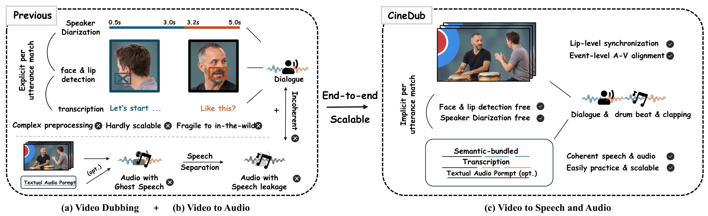
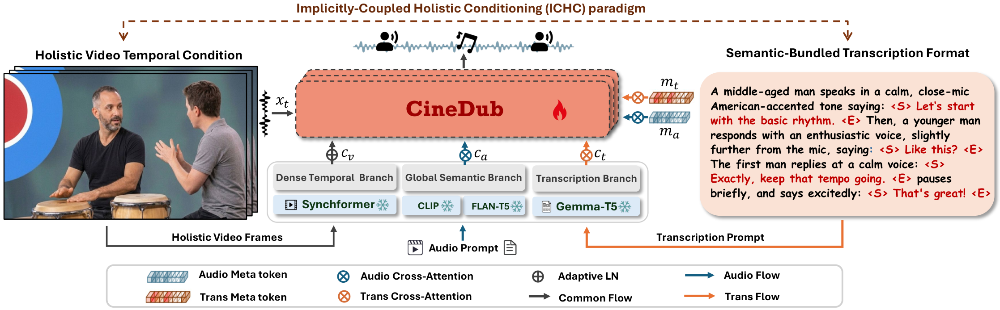

Anonymous Authors
⏳ On first visit, please allow 1–2 minutes for all videos to preload.
Automatic video dubbing in the wild remains fundamentally limited by two competing constraints: hierarchical methods depend on brittle, multi-stage preprocessing pipelines, while holistic approaches suffer from weak temporal alignment and speaker-utterance ambiguity in multi-speaker settings. We propose CineDub, a unified diffusion-based model that achieves precise multi-speaker dialogue dubbing directly from uncropped videos — without face cropping or speaker diarization. Central to our approach is the Implicitly-Coupled Holistic Conditioning (ICHC) paradigm, which resolves speaker ambiguity through cross-modal coupling of holistic visual features and semantic-bundled transcriptions, enabling multi-turn dialogue dubbing at scale. Building on these unified temporal cues, CineDub further extends to joint speech and coherent audio generation in a single pass — eliminating the ghost speech artifacts and acoustic incoherence inherent to cascaded pipelines.
SynchFormer features exhibit emergent attention-switching, dynamically tracking the active speaker without diarization. A semantic-bundled transcription format resolves speaker-utterance ambiguity — directly generatable by MLLMs.
A single end-to-end model simultaneously generates dubbed speech and coherent sound effects from uncropped video, bypassing cascaded pipelines that introduce ghost speech artifacts and acoustic incoherence.
Inspired by human linguistic evolution, the model first learns general audio then specializes toward speech, resolving the optimization conflict between tasks. A decoupled textual branch with learnable meta-tokens further routes speech and audio prompts independently, eliminating cross-prompt interference and achieving expert-mode inference performance.
CineDub-Multi for multi-speaker dialogue dubbing and CineDub-SA for V2SA evaluation — enabling realistic assessment beyond single-speaker assumptions.


CineDub is the first holistic model that simultaneously handles multi-speaker dialogue, precise lip sync, and end-to-end joint speech+audio generation — no preprocessing required.
| Method | Paradigm | No Multi-Preprocessing | Lip Sync | Multi-Speaker | Joint Speech+Audio | vs. Expert Model | Checkpoint |
|---|---|---|---|---|---|---|---|
| Automatic Video Dubbing | |||||||
| HPMDubbing | Lip/Face Crop | ✗ | ✓ | ✗ | ✗ | — | ✓ |
| EmoDubber | Lip/Face Crop | ✗ | ✓ | ✗ | ✗ | — | ✓ |
| AlignDiT | Lip/Face Crop | ✗ | ✓ | ✗ | ✗ | — | ✓ |
| DeepDubber | Holistic | ✓ | ✓ | ✗ | ✗ | — | ✓ |
| DeepAudio | Holistic | ✓ | ✓ | ✗ | △ cascade | — | ✓ |
| FunCineForge | Lip/Face Crop | ✗ | △ AR | ✓ | ✗ | — | ✓ |
| Video-to-Speech-and-Audio (V2SA) | |||||||
| DualDub | Holistic | ✓ | △ AR | ✗ | ✓ | ✗ | ✗ |
| BVS | Holistic | ✓ | △ AR | ✗ | ✓ | ✗ | ✗ |
| AudioGen-Omni | Holistic | ✓ | ✓ | ✗ | ✓ | ✗ | ✗ |
| VSSFlow | Lip/Face Crop | ✗ | ✓ | ✗ | ✓ | ✗ | ✗ |
| Ours | |||||||
| CineDub | Holistic | ✓ | ✓ | ✓ | ✓ | ✓ | △ Under Review |
All samples generated by a single unified end-to-end DiT model — raw video input only, single-pass generation, no cherry-picking.
Input: silent video + transcription caption → Output: dubbed speech with coherent sound effects.
Transcription captions are directly generated by Gemini 2.5 Pro without any manual annotation. CineDub processes everything in a single unified end-to-end DiT model — no face cropping, no speaker diarization, no preprocessing.
Input: silent video + transcription caption + audio caption (optional) → Output: speech and audio.
Input: silent video + audio prompt (optional) → Output: audio.
CineDub's unified visual conditioning enables high-quality video-to-audio generation with optional text prompt for fine-grained control.